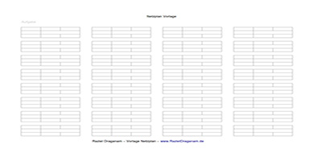
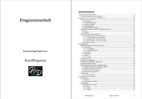

Was ich sonst noch mache...
Hier kommt alles rein, das nicht in die anderen Kategorien passt. Wird also voraussichtlich eine bunte Mischung...
Unter anderem diverse Vorlagen wie zum Beispiel eine Vorlage für einen Netzplan oder das Programmierheft, in dem ich Versuche die wichtigsten Sachen (zumindest für mich) zusammenzutragen und nachschlagen zu können.
Netzplan

Hier ist der Netzplan für BWL verfügbar.
Programmierheft

Hier die Inhaltsangabe für das Programmierheft.